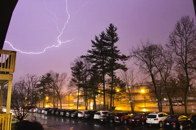
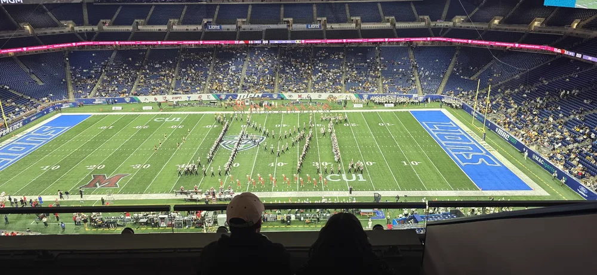
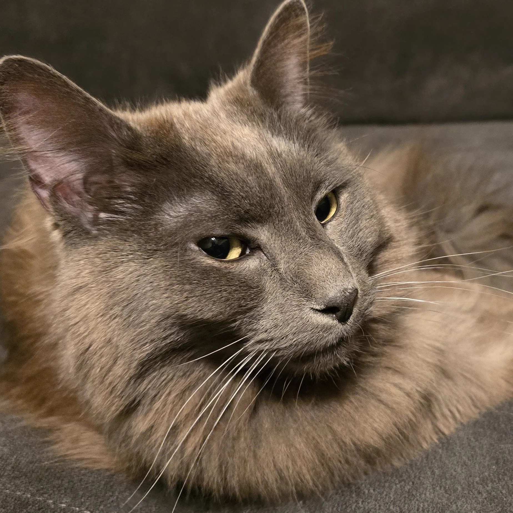
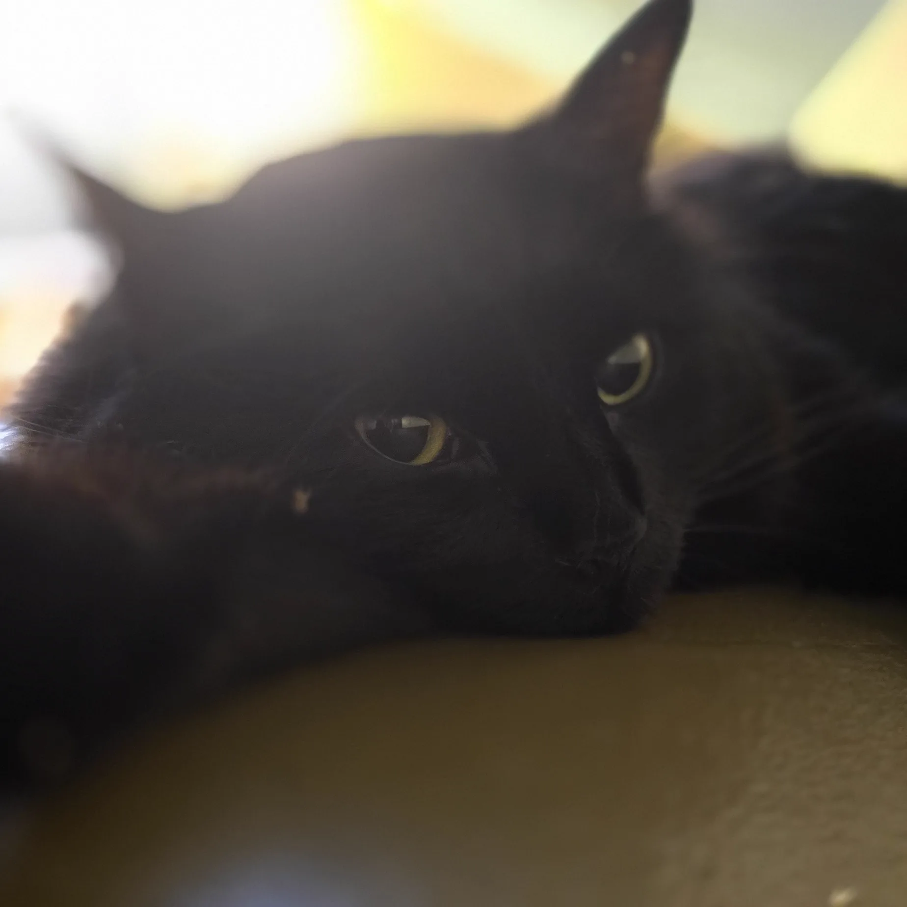
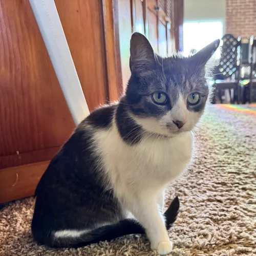
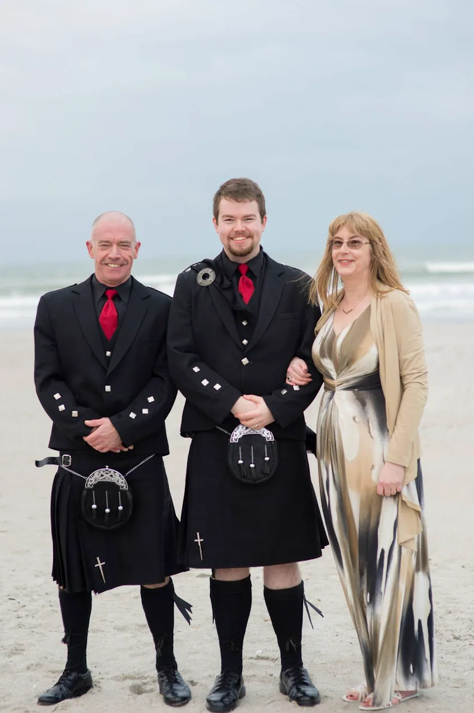

From Scotland to Michigan
It took me a long while to stop thinking "Oh, they must be American!" as soon as I heard someone speak, with a strong midwestern accent coming through. Of course they're American, you're the foreigner here!
I was born in Scotland. School, university, first job, back to university for my PhD, then decided to see more of the world and moved to Michigan for a postdoctoral position at Michigan State University. I have been here long enough for it to feel like home, which is odd, because I didn't originally plan to be here this long.
A quick Scottish glossary
- Dreich: dull, grey, miserable weather. The word sounds exactly like the weather it describes, which is either a coincidence or a form of linguistic justice.
- Haggis: a small furry creature native to the Scottish Highlands, distinguished by having legs of different lengths so it can run around hillsides without falling over. Catching one is a rite of passage. Alternatively, it is a traditional dish made from sheep offal mixed with oatmeal, onions, and spices, cooked in a sheep's stomach. Both explanations have been offered to tourists with equal sincerity.
- Hogmanay: the Scottish New Year celebration, traditionally bigger than Christmas and involving first-footing (visiting neighbours, friends and family after midnight with gifts, drinking and eating).
- Irn-Bru: a Scottish carbonated soft drink, aggressively orange, beloved in a way that is genuinely hard to explain to outsiders. Second only to water in Scottish cultural significance (our water is the best in the world).
- Ned: An archetype, a bit like a "jock" in the US, except this is Scottish slang for a young person associated with antisocial behaviour. Roughly equivalent to “chav” in England. The term carries class connotations.

Scotland, Before
Scotland has a particular texture that is hard to explain to someone who has not lived there. It is not just the landscape, though the landscape is extraordinary: you can be standing on a street corner in a city and see hills, or drive forty minutes and be somewhere that feels genuinely ancient and vast. It is something in the culture, too: a particular combination of dry humour, extreme social politeness (lest ye' experience the collective glare of those around ye') and a deeply ingrained want to no' make a fuss. There is a reason the highest compliment in many parts of Scotland is simply that someone is “no bad” [not bad, meaning genuinely good].

Leaving Scotland
Deciding to leave your home country (family, friends, culture, landscape, comfortable and known places, food, etc.) is a tough decision.
I remember my parents crying at the airport when I left Scotland. I knew I'd miss them immensely, but it turns out the path I took actually saved and revived my relationship with them. I miss my friends dearly, too. I'm still in the group chats, and still see when they are all planning to hang out with each other, and it always stings a little knowing I can't be there with them.
One particularly hard moment was realising how expensive it is to fly back and forth from Scotland <-> USA. This meant that I had to set my expectations realistically: I could only make the trip infrequently. That also made me realize I was unlikely to see my grandparents again after I moved - which is an impossible decision to make. Do you jump on the opportunity to work with leaders in your research field, setting the groundwork for your entire career and future, or do you stay home so you can be there with loved ones in their last months / years? How do you decide? The answer is ultimately, down to your gut feeling. My grandparents, at the time, were old, but not given months to live (yet). I realized if I was to wait, I would regret it, and I would just have to hope I could come back and see them again.
I went home, once, in 2022. I had planned to go sooner, for a friend's wedding, but COVID happened and the wedding was postponed, so was my trip. When I did visit, I got to see my grandparents once more, which was the final time, as they both passed away shortly thereafter. It was the right decision for me to leave, and having thought about it beforehand helped me with the grief. I know I made the right decision for me, and I think my grandparents knew that, too.
Arriving in Michigan
I don't remember the flight, which means it was uneventful. I do remember renting a car. I had never driven an automatic before, nor had I driven on the right (wrong, I thought at the time) side of the road. Surprisingly, there was no requirement for me to take a test or anything for the first few months, so I just got off of the plane and into a car. The drive from Detroit to East Lansing was stressful, despite having read about differences in road signs on the plane. Eventually, I arrived at my new apartment I had secured beforehand, and thankfully my air mattress was waiting for me at my apartment door, courtesy of Jeff Bezos. Then I unpacked and realized I left my laptop in a tray at security in the airport. That was not a fun feeling, but I was still mostly just excited to be in a truly new place.
I came to Michigan for a postdoctoral position at MSU, working in genomics and evolutionary computation. Ironically, I was working in the animal science department, whose major funding source was the USDA (US Department of Agriculture), to improve the genetic composition of species for meat. On my first day, they brought me along to a steak tasting event with some extremely expensive steaks. It was about then I realized I'd have to inform them I don't eat meat, which eventually became the basis for many friendships in the department. Thankfully, the work I did contributed to the science of finding signals for any kind of complex traits found in animal genomes, rather than specifically improving meat production!
What I was less prepared for was how much of daily life would need renegotiation. Not in ways that were bad, exactly, but in ways that were constant and cumulative: healthcare, driving on the other side of the road, the sheer scale of everything, the food portions, the genuine warmth of strangers, the flags (so many flags), the particular relationship Americans have with national identity. All of it arrived at once, and I'm still adjusting after all these years.
Money, Taxes, and the Healthcare Question
The salary difference between the UK and the US is real, and apparent from day one. My previous paying position was £25,000 (at the time, approx $40,000). The job offer at MSU was $52,000, which at the time made me feel like I was going to be rich. But gross pay is not the full picture. It took me a while to adjust to the "sticker shock" of American administrative costs, realising that a salary increase is often offset by the sudden requirement to treat healthcare and potential education costs as individual, budget-draining line items rather than collective societal ones. Understanding the actual difference means accounting for what Scotland provides that the US charges for separately: university tuition, GP appointments, prescription costs, and a social safety net that, whatever its flaws, means you do not have to think about health insurance as a budget line item.
I have had a genuinely good healthcare experience in the US. But my experience is not representative: I have had employer-provided insurance, a stable income, and enough familiarity with bureaucratic systems to navigate one that is not designed to be navigable. For many Americans, the calculation looks very different, and when I say I prefer certain aspects of the US system, I am describing the experience of someone with real privilege within it. I can afford good healthcare, so I receive good healthcare (including dental, vision, etc.) - but I know people who have experienced a medical emergency and now have a decade of debt ahead of them.
Free Education
In Scotland, university is free for Scottish students. This is simply the norm: it does not make you exceptional, and it does not come up much in conversation because it applies to almost everyone around you. I completed a four-year undergraduate degree and a PhD without accumulating tuition debt. In fact, I was paid to do my PhD. I did not fully understand how extraordinary that was until I arrived somewhere that many of my peers had six-figure student loan balances and were still paying them down a decade later - or worse, they had paid $35,000 on $70,000 of debt, and are down to $66,000.
In Scotland, I didn't see my privilege clearly. I didn't notice the difference because it was the norm. In Michigan, it separated me plainly from the people sitting next to me.
I notice, too, that having a PhD changes how people treat me here in a way that feels more pronounced than it did at home. There is a particular kind of deference that attaches to the title in the US, a willingness to extend credibility that I do not think I fully earned in the room every time. I try to use it to amplify voices that might otherwise be overlooked, but ultimately that means I am often an arbiter of who gets a voice, and it's all too easy to speak over others.
One other major difference is what a PhD is in Scotland vs the US. In Scotland, at least for my PhD, I didn't have to do any classes. I worked with a company who part-funded my education and travel funding, in exchange the research I conducted was useful for their business. This means that I got some great real-world experience alongside my academic training, but my academic training was more like an apprenticeship than a student in a classroom. In the US, I found myself working alongside people with 4-6 years more formal education than I had, but who had barely gotten their gums around real research projects or grant applications. Swings and roundabouts, both have their benefits, but I was well aware that my experience was different.
The Incident
I never felt like someone alien. The US is a diverse country, especially compared to my small town in Scotland. I felt like just another person here, and was treated with respect and dignity. I'm a white guy, and from Scotland of all places, which is venerated by white Americans as a place of cultural heritage, almost something mythical. I'm well aware if I came from Zimbabwe, India or Japan, my experience would have been very different.
That being said, I want to mention the only time I really experienced something that could be labelled as prejudice. I went to a coffee shop in Lansing, a place I found had excellent coffee. On one visit here, I struck up a conversation with the cashier - who turned out to be the owner. She was a little standoffish, but I thought it was just my accent making me difficult to understand, which sometimes happened, especially if I got excited (and I probably was, I really like coffee).
So she sticks her tongue into her cheek and looks me in the eyes, and says: "So where are you really from?". I'd, of course, heard this before, and assumed it would be the usual "Oh I thought you were Irish / Canadian / South African" response.
"I'm from Scotland! Got here just a few months ago, sorry if my accent is a bit hard to parse!" with a polite smile - "I work at the University, I was recruited shortly after finishing my PhD."
"Huh. So why couldn't they just hire someone local?"
I felt my brain stall, turning over like my crappy student car engine I left back in Scotland. I eventually managed to respond: "Uh. I mean. I don't think a researcher with a background in a niche form of AI, working in animal genomics, is a particularly common profession for the average town?", to which she harrumphed and gave me my receipt.
This was the closest thing to genuine xenophobia I have experienced. There was no local queue I had jumped for some agenda of bringing Scottish people into America. In fact most of my friends back home thought I was nuts for wanting to move the US. I wasn't hurt, just disappointed to have what I'd heard of in the US be confirmed so starkly. Most Americans are super kind and welcoming, but there are definitely many, many people here that would just rather I wasn't.
Weather, Seasons, and Real Storms
Scottish weather is famously awful, and the reputation is largely deserved. It is grey, it is wet, and the phrase “dreich” [dull, grey, miserable weather, a word that perfectly captures its own meaning] exists for a reason. We also have a town called "Coldrain", take that for what you will. The variation between seasons is mostly a matter of degree: slightly less wet, slightly less grey. Sometimes, if it's warm for a couple of hours, we'll say "Well, that was a great Summer", which I think shows how sunny it isn't in Scotland.

Michigan is something else entirely. The seasons here are fully committed: winter means real snow and temperatures that require a different category of clothing, and autumn (fall) is genuinely spectacular in a way I was not prepared for. Summer brings heat, humidity, and thunderstorms of a quality Scotland simply does not produce. I remember my first major storm in the US, I watched, in the rain, from my tiny apartment's little balcony. I remember thinking, dramatically, that it was like Thor and Zeus were fighting over who keeps the "God of Thunder" title.

The first time I got a tornado warning on my phone I genuinely did not know what to do with it. In Scotland, weather is an inconvenience. In Michigan, weather is occasionally an event. I find I prefer it: there is something clarifying about a year with a legible shape, where each season actually commits to what it is, even if I sometimes have to bundle up my family into a tiny room when the tornado siren goes off.
How People Are Here
The most consistently surprising thing about living in the Midwest is how openly enthusiastic people are. In Scotland, there is a cultural dampening mechanism, a reflex that flattens public expressions of excitement or passion, not because people do not feel those things but because performing them too visibly is considered uncouth.
I remember seeing someone, by themselves, out rollerblading. My Scottish subconsciousness scoffed and immediately judged them for being overly enthusiastic in public. My conscious mind then scolded its older brother for being judgemental, because I actually really love now being in a culture that allows for genuine expressions of enthusiasm for hobbies other than going to the pub or football (soccer).
The same is true of strangers: the friendliness of the American Midwest is real and not entirely transactional. Cashiers ask how your day is going and mean it, or at least perform meaning it well enough that the distinction stops mattering. People hold doors open from further away than is strictly necessary. Neighbours introduce themselves.
Holidays, Veterans, and the Texture of American Identity
Holidays in the US carry a cultural weight that has no real equivalent in Scotland. Thanksgiving is a full logistical event: travel, family coordination, a meal that has its own canon and its own stakes. Fourth of July involves fireworks much like our Guy Fawkes Night, except with a lot of politics and virtue signaling. Halloween is taken seriously by adults and you can buy a costume for anything if you're happy to spent $250 at Spirit Halloween.
St. Patrick's Day is an experience that genuinely does not exist at home. In Scotland (and Ireland), it is a minor calendar event. In Michigan, it is green beer and Irish-American identity performed at volume. I have watched people with surnames like Kowalski and Johnson celebrate their Irish heritage with a conviction that would baffle most people in Dublin.
The visibility of military service as a cultural value was also odd to me. In Scotland, Remembrance Sunday is observed with seeing a bunch of people wearing a poppy on their lapels, but it is contained: a specific day, a specific ritual. Here, veterans are acknowledged at sporting events, in restaurants, in airports. The phrase "thank you for your service" is part of the ordinary social vocabulary. Understanding what that means, and what it costs, and who it does and does not apply to, took me a while.
I went to my first football (not soccer) game in Detroit a few months ago, and I was stunned by everyone standing and putting their hands over their hearts for the national anthem. I received glares for not doing so. I hadn't exactly planned how to behave in this situation, it took me by surprise, but I didn't particularly want to participate in a ritual I wouldn't do for my own country let alone another. It would have felt submissive and performative. I chose to be silent and respectful, observing the moment without participating. I feel it's unlikely that Americans would stand and put their hands over their hearts for a foreign national anthem, so why would I?

Both Places, and Where I Am Now
Scotland made me. The particular kind of directness I have, the scepticism of pretension, the sometimes crude and dry humour, the instinct to use mockery as a form of endearment, are oddities Americans notice in me. I miss hills, and I miss the cold. I miss the particular small-world feel that I didn't even notice when I lived there: you could really drive anywhere and see anyone you ever knew in an hour or two, which felt like a big distance when I lived there. I miss certain foods, certain accents, certain habits of conversation, and the particular warmth of a place where "haud yer wheesht ya wee fanny" [hold your tongue, you little fool] is said with as much affection as anything else.
The US, and Michigan, has given me a career that would not have been possible at home, a way of being in the world that is more openly curious and more comfortable with expressed enthusiasm, and a family that I truly love, even the furry ones.




© Ken Reid. All rights reserved. I even brought our dog, Brutus, from Scotland!
I am happy to be here. I would recommend the experience, with the caveat that the weather adjustment takes longer than you think, and that cashiers are not actually asking about your day. But more than that, I would recommend it for what it reveals: that you can be from one place, build a life in another, and eventually realise that you are big enough to contain both.

Common questions
Do you plan to stay in the US permanently?
For the foreseeable future, yes, but I'm open to change if circumstances evolve.
What do you miss most about Scotland?
Friends and family, but also the landscape, certain foods. Also the proximity to Europe, which you do not appreciate until you no longer have it.
Was the culture shock as bad as people say?
It was subtler and longer-lasting than I expected. The big things, healthcare, driving, the scale of everything, are obvious and adjustable. The small things, the social register, the unspoken rules, the way enthusiasm is calibrated, took years rather than months.
Is the pay really better in the US?
In technical fields, gross pay is substantially higher. The actual net difference depends heavily on healthcare costs, taxes, and cost of living in your specific location. It is not a simple comparison, and anyone who tells you it is has probably only looked at one side of the ledger. Generally though, yes.